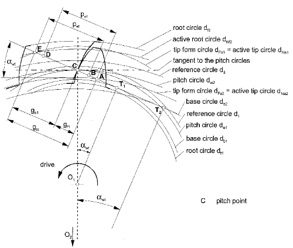
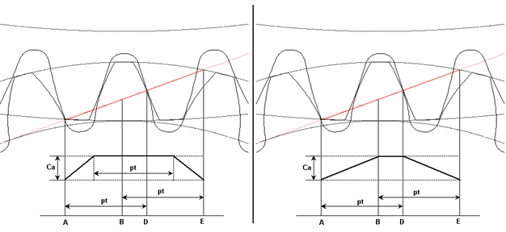

|
|
|


齿廓修形
-
从动齿轮上的齿顶修形可减小啮入冲击，而主动齿轮上的齿顶修形可减小啮出冲击。因此，齿顶修形通常同时应用于两个齿轮。仅在特殊情况下才只应用于从动齿轮。
-
计算齿廓修形时，必须始终指定齿顶倒角。否则，有效渐开线将不会包含在计算中。
-
齿面接触刚度始终根据所选计算方法进行计算。或者，接触刚度也可以根据齿形确定（参见齿面接触刚度一章）。
-
沿啮合线长度的各点根据 ISO 21771 进行标注。对于主动小齿轮，必须在小齿轮上从 H -DE 到 E（或 D 到 E）施加齿顶修形，在齿轮上从 A 到 H -AB（或从 A 到 AB）施加。对于从动小齿轮，标注根据 ISO 21771 互换（A 变为 E，E 变为 A）。
-
KISSsoft 根据已由修形值改变的额定扭矩计算齿顶修形值。对于运行扭矩不总是相同的齿轮，修形值假定约为最大力矩的 50 到 75%，在小齿轮和齿轮之间均匀分布。齿顶修形 Cα 的默认值使用 Niemann 所定义数据的平均值来定义。（稍大的）值（C.I）设置为从动齿轮齿顶处的啮合起点。值 C.II 设置为主动齿轮齿顶处的啮合终点值。当您选择齿廓修形时，值 C.I 也会设置在啮合终点。
对于深齿形（其中 εα > 2），齿顶修形中与载荷相关的部分会根据精度等级（制造质量）降低到 12.5%（对于质量等级 8 级及更差）最高可达 50%（对于质量等级 5 级及更好）。 -
KISSsoft 还会计算修形长度，即所谓的“长修形”，它从啮合线长度的 A 点延伸到 B 点。而“短修形”只到 H-AB 点（A 和 B 的中点）。通常选择短修形。但是，修形长度（从 A 到 AB）不应太短。应始终存在（与齿高相关的）0.2mn 的最小长度。该值在尺寸计算时进行检查。如果从 A 到 AB 的长度太短，程序会提示您使用 0.2mn 的最小高度。但是，这样做的结果是未修形部分的重合度将小于 1.0（< 2.0，对于 εα > 2 的深齿形）。程序随后会显示一条消息告知您这一点。

图 15.67：图 14.34：圆柱齿轮的啮合线长度

图 15.68：短（左）和长齿廓修形
-
的类型会影响抗胶合安全系数的计算方式。
如果选择（根据 Niemann 给出的建议），接触末端（啮合线上的 E 点）的齿廓修形会略小于接触开始处的齿廓修形。
如果选择，接触末端的齿廓修形会设置为与接触开始处的齿廓修形相同的值。
Profile modification
-
Tip relief on the driven gear reduces the entry impact, whereas tip relief on the driving gear reduces the exit impact. Tip reliefs are therefore usually applied to both gears. They are only applied to the driven gear alone in exceptional circumstances.
-
When calculating the profile modification, you must always specify the tip chamfer. If not, the active involute will not be included in the calculation.
-
Tooth contact stiffness is always calculated according to the selected calculation method. Alternatively, the contact stiffness can also be determined from the tooth form (see chapter Tooth contact stiffness).
-
The points along the length of path of contact are labeled according to ISO 21771. In the case of a driving pinion, a tip modification must be applied on the pinion from H -DE to E (or D to E) and on a gear, from A to H -AB (or from A to AB). For a driven pinion, the labels are swapped according to ISO 21771 (A becomes E, E becomes A).
-
KISSsoft calculates the tip relief value for a nominal torque that has been changed by the modification value. In the case of gears that do not always have the same operating torque, the modification value is assumed to be approximately 50 to 75% of the maximum moment, evenly distributed across the pinion and the gear. The default value for tip relief Cα is defined using the mean value of the data as defined by Niemann. A (somewhat greater) value (C.I) is set as the meshing start at the tip of the driven gear. The value C.II is set as the value for the meshing end at the tip of the driving gear. When you select the profile modification, the value C.I is also set at the meshing end.
For deep tooth forms, where εα > 2, the load-dependent portion of tip relief is reduced, depending on accuracy grade (manufacturing quality), to 12.5% (for quality level 8 and poorer) and up to 50% (for quality level 5 and better). -
KISSsoft also calculates the modification length, also known as the "long modification", which extends from point A to point B of the length of path of contact. However, the "short modification" only goes to point H-AB (the midpoint between A and B). Usually, the short modification is selected. However, the modification length (from A to AB) should not be too short. A minimum length (related to the tooth height) of 0.2mn should always be present. This value is checked during sizing. If the length from A to AB is too short, the program prompts you to use a minimum height of 0.2mn. However, the result of this is that the contact ratio in the unmodified part will be less than 1.0 (< 2.0 for deep tooth forms where εα > 2). The program then displays an message telling you of this.
Figure 15.67: Figure 14.34: Length of path of contact for a cylindrical gear
Figure 15.68: Short (left) and long profile modification
-
The type of has an effect on how safety against scuffing is calculated.
If you select according to the suggestion given in Niemann, the profile modification at the end of the contact (point E on the path of contact) is somewhat less than the profile modification at the beginning of the contact.
If you select , the profile modification at the end of contact is set to the same values as the profile modification at the beginning of contact.